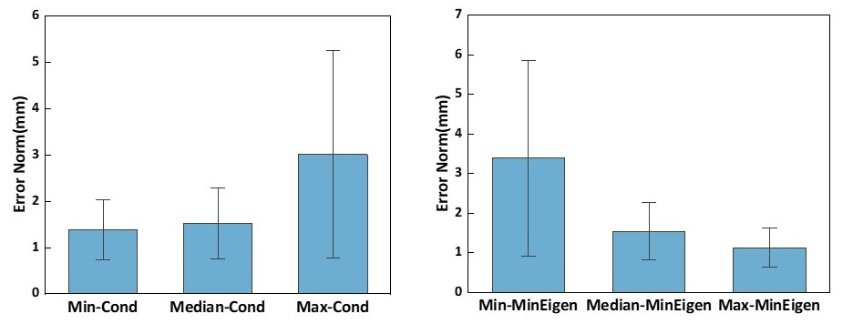
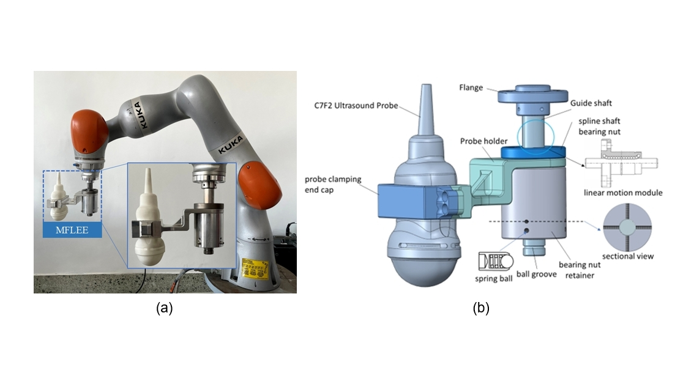
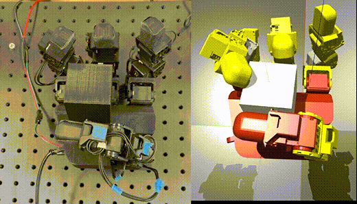
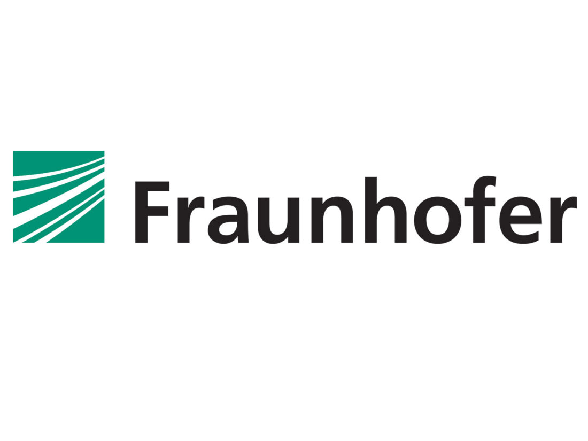

Research
I focus on Robot Learning and aim to significantly expand robots' perception and physical interaction capabilities, particularly through Multi-Modal Perception, Dexterous Manipulation, and Learning with Dynamic Tasks.
Publications
|
|
|
Tool Center Point Calibration via Posture-Sequence Particle Swarm Optimization
Ziqi Gao, Yingli Li, Yang Luo, Jincheng Sun, Yuhan Ying, Yunxiang Jiang, Xingang Zhao, Yiwen Zhao,
IEEE Sensors Journal,2023
IEEE Sensors Journal
Tool Center Point Calibration via Posture-Sequence Particle Swarm Optimization
|
|

|
The accuracy analysis of tool center point calibration via condition number and minimum eigenvalue
Ziqi Gao, Yingli Li, Yang Luo, Yunxiang Jiang, Bi Zhang, Xingang Zhao, Lingkai Chen, Yiwen Zhao,
IEEE International Conference on Real-time Computing and Robotics (RCAR), (Oral Presentation) 2023
The accuracy analysis of tool center point calibration via condition number and minimum eigenvalue
|
|

|
Innovative Design and Validation of an Ultrasound Examination Robot's End Effector with Passive Force Limitation Mechanism
Ziqi Gao, Yang Luo, Yunxiang Jiang, Xingang Zhao, Yiwen Zhao, Ning Li
2024 IEEE 14th International Conference on CYBER Technology in Automation, Control, and Intelligent Systems (CYBER)
|
Co-authored Publications |

|
3D-CAM: a novel context-aware feature extraction framework for neurological disease classification
Yuhan Ying, Xin Huang, Guoli Song, Yiwen Zhao, Xingang Zhao, Lin Shi, Ziqi Gao, Andi Li, Tian Gao, Hua Lu, Guoguang Fan,
Frontiers in Neuroscience
3D-CAM: a novel context-aware feature extraction framework for neurological disease classification
|
Projects |

|
Robot Pipetting Operation with vision and force
A solution to pipetting by robots.
Technologies: Motion Control, Force Control, Vision Recognition, Integration of Vision and Force, ROS, CPP
Webpage | GitHub Repo
|

|
Robot Teleoperation
UR Robots tele-operated by Foce Dimension haptic devices
Technologies: FK, IK, Motion Control, ROS, Python, CPP
Webpage | GitHub Repo
|
|

|
Cube Reorientation with LeapHand
Cubes of different sizes were successfully reorientated around multi axes by LeapHand
Technologies: Deep Reinforcement Learning, Sim2Real, Motion Plan, ROS, Python
Webpage | GitHub Repo
|
Education |
|
|
University of Chinese Academy of Sciences, China
2021.09 - Present
GPA: 3.78/4.0
PhD Student of a successive postgraduate and doctoral program in Pattern Recognition and Intelligent Systems.
Advisor: Prof. Yiwen Zhao
|
|
|
Zhengzhou University, Zhengzhou, China.
2017.09 - 2021.07
GPA: 3.66/4.0, Ranking: #1, Excellent Graduate Student
B.E. in Mechanical Engineering
|
|
Experiences |
|

|
Fraunhofer IFF, Magdeburg, Germany
2024.09 - expected 2025.08
Work in Cognitive Robotics Group, Robotic System Department, Fraunhofer IFF
Visiting Student Researcher
Advisor: Magnus Hanses
|

|
Brainco and Harvard University, Cambridge, Massachusetts, United States
2019.07
The Innovation Technology Camp
|
|
Honors and Awards
The Chinese Academy of Sciences (CAS) Doctoral International Cooperative Training Program Scholarship (12 months * 1,350 euros, 2024/09 - 2025/08).
The Graduate Academic Scholarship at the University of Chinese Academy of Sciences (9,600 CNY 2022; 13,000 CNY 2023; 10,800 CNY 2024).
Merit Student of University of Chinese Academy of Sciences, 2022.
Outstanding Graduate of Zhengzhou University, 2021.
Zhengzhou University Outstanding Student Scholarship First Prize (3 times * 1,850 CNY, 2018, 2019, 2021).
Merit Student of Zhengzhou University, 2018, 2019, 2020, 2021.
National Encouragement Scholarship (5,000 CNY, 2020).
Zhengzhou University Outstanding Student Short-term Overseas Exchange Scholarship (38,000 CNY, 2019).
Outstanding Student Cadre of Zhengzhou University, 2018.
|
|

{kind=link}